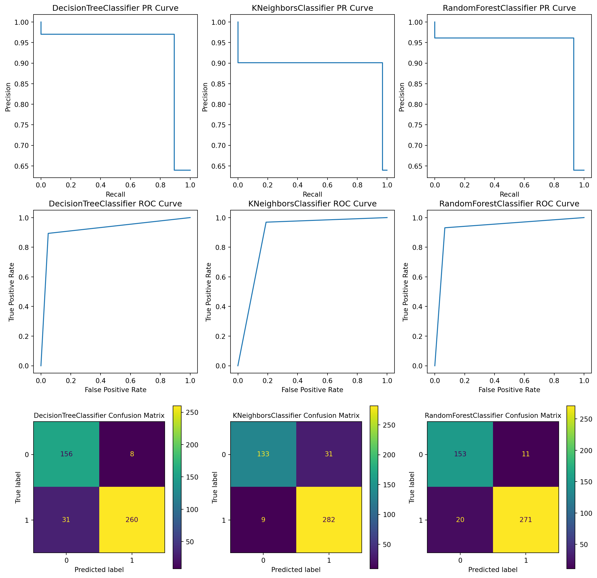

# Imports
from sklearn.tree import DecisionTreeClassifier
from sklearn.neighbors import KNeighborsClassifier
from sklearn.ensemble import RandomForestClassifier
from sklearn.datasets import load_breast_cancer
from sklearn.model_selection import train_test_split
from sklearn.metrics import roc_curve, precision_recall_curve, confusion_matrix
from sklearn.metrics import ConfusionMatrixDisplay, PrecisionRecallDisplay
from sklearn.metrics import RocCurveDisplay
import matplotlib.pyplot as plt
# Constants for test size, and random state
TEST_SIZE = 0.2
RANDOM_STATE = 20
# Instantiate the classifiers
classifiers = [DecisionTreeClassifier(),
KNeighborsClassifier(),
RandomForestClassifier()]
# Load the data
X, y = load_breast_cancer(return_X_y = True)
# Split the data
X_test, X_train, y_test, y_train = train_test_split(X,
y,
test_size = TEST_SIZE,
shuffle = True,
random_state = RANDOM_STATE)
figure = plt.figure(figsize = (15, 15))
# Iterate through the classifiers
for idx, clf in enumerate(classifiers):
idx += 1
# Get the name of the classifier
name = clf.__class__.__name__
# Fit the classifier to the training data
clf.fit(X_train, y_train)
# Predict the test data
y_pred = clf.predict(X_test)
# Calculate info about the ROC Curve, Precision Recall Curve, and Confusion Matrix
precision, recall, thresholds = precision_recall_curve(y_test, y_pred)
fpr, tpr, thresholds = roc_curve(y_test, y_pred)
cm = confusion_matrix(y_test, y_pred, labels = clf.classes_)
# Create the displays
precision_recall_curve_display = PrecisionRecallDisplay(precision = precision,
recall = recall)
roc_curve_display = RocCurveDisplay(fpr = fpr, tpr = tpr)
confusion_matrix_display = ConfusionMatrixDisplay(confusion_matrix = cm,
display_labels = clf.classes_)
# Plot the ROC and Precision Recall Curves
ax1 = figure.add_subplot(3, 3, idx)
ax1.set_title(f"{name} PR Curve")
precision_recall_curve_display.plot(ax = ax1, label = "Precision Recall Curve")
ax1.legend_.remove()
ax2 = figure.add_subplot(3, 3, idx + len(classifiers))
ax2.set_title(f"{name} ROC Curve")
roc_curve_display.plot(ax = ax2, label = "ROC Curve")
ax2.legend_.remove()
# Plot the confusion matrix
ax3 = figure.add_subplot(3, 3, idx + 2 * len(classifiers))
ax3.set_title(f"{name} Confusion Matrix", fontsize = 10)
confusion_matrix_display.plot(ax = ax3)